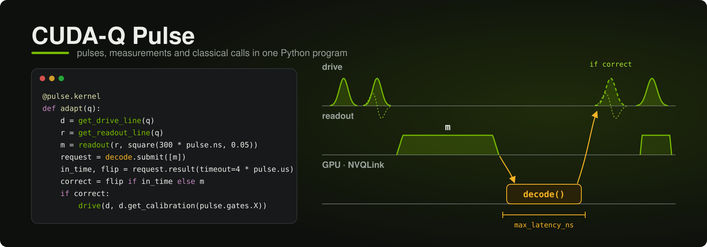
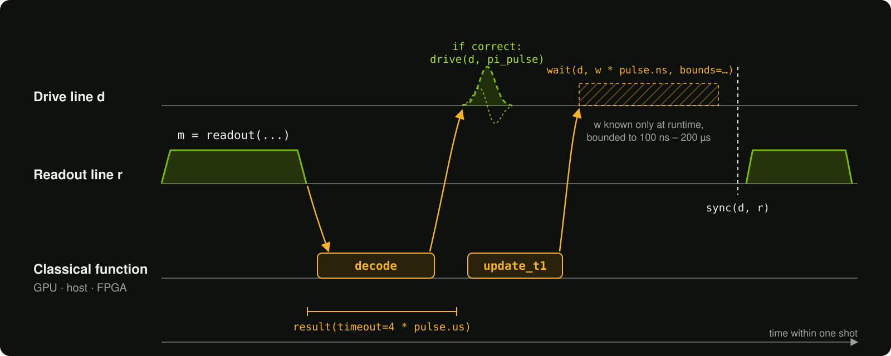
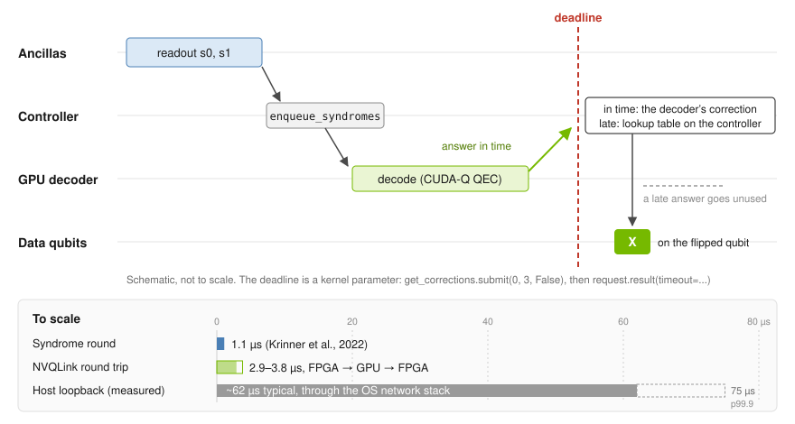
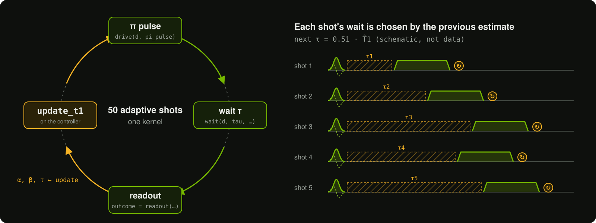
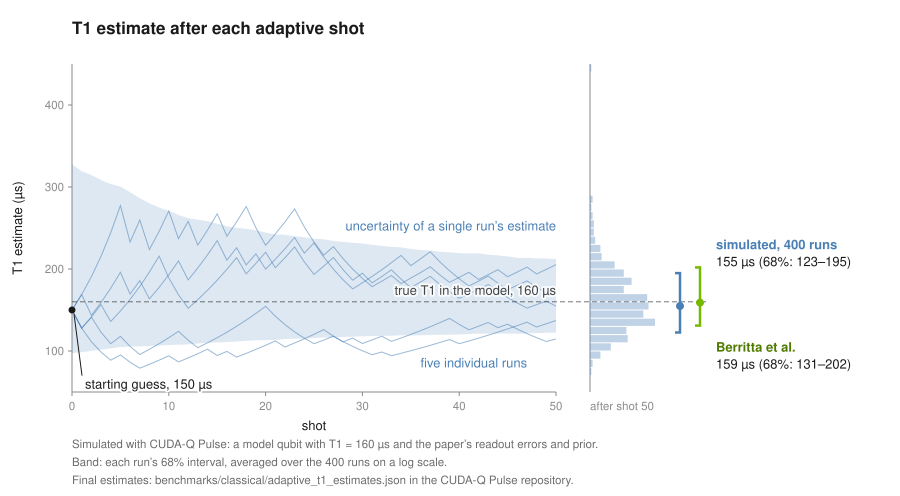
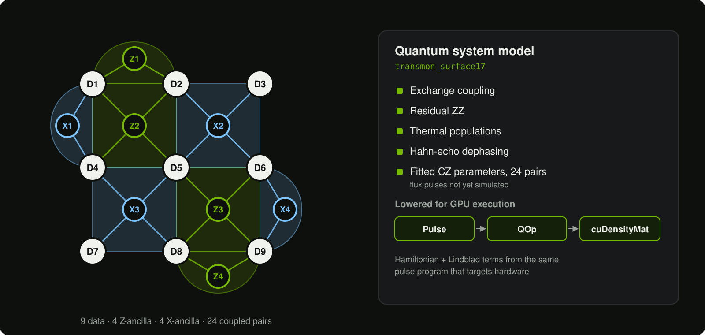
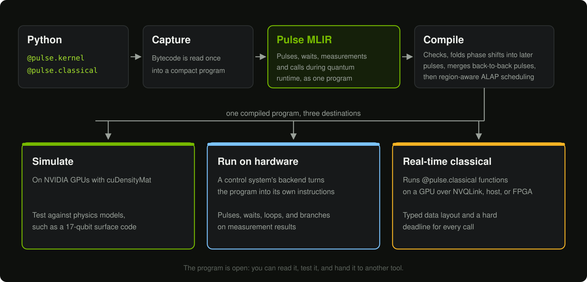

Introducing CUDA-Q Pulse: Python-native pulse programming with GPUs in the loop
Gates are the currency of quantum applications. But every quantum gate is a convenient abstraction, representing a shaped microwave or laser pulse executing across a control line with nanosecond precision. Calibration, quantum error correction (QEC), and device bring-up all happen at that deeper layer, and very often crafting and operating with those pulses requires GPU calculations to make fast decisions during quantum runtime.
Today we're releasing CUDA-Q Pulse (cudaq-pulse), an open-source pulse-level programming model and MLIR compiler.
This new addition to the NVIDIA quantum platform allows users to write pulse programs in ordinary Python and call classical functions on a GPU, host, or FPGA in the middle of the experiment. It can work within explicit latency budgets, and simulate the whole loop involved in pulse programming with NVIDIA cuDensityMat before running it on quantum hardware.

Why pulses, and why this release
Gate-level frameworks give algorithm developers a clean interface. But the work that makes a quantum processor (QPU) function, such as tuning a π pulse, tracking a drifting T1, echoing away crosstalk, or choosing an action before the next quantum error correction round, is written in terms of control lines, tones and waveforms. Until now that code has mostly lived in sequencer languages tied to one control system - making it hard to share or simulate.
The classical side of that loop is also becoming increasingly demanding.
Adaptive calibration runs a Bayesian estimator between shots.
Real-time QEC needs a decoder to answer before the next syndrome round.
NVQLink gives QPUs access to GPUs with microsecond latency, and cudaq-realtime provides the runtime for those calls.
CUDA-Q Pulse adds the programming model, a single Python source that describes the pulses, the measurements, and the classical calls between them, compiled to an open MLIR representation that any control system can utilize.
-
Python-native kernels
@pulse.kernelfunctions are ordinary Python, with loops, comprehensions,*qudits, helpers, and direct calls. They trace to a typed MLIR pulse dialect in milliseconds. -
Real-time classical calls
@pulse.classicaldeclares a function the pulse program calls during quantum runtime, with a typed data layout and a latency budget. The scheduler treats it like any other operation. -
CPU and GPU simulation
The same kernel runs on a NumPy reference simulator or lowers through an operator dialect to NVIDIA cuDensityMat, so you can run full pulse routines against a physics model of a quantum system, including a 17-qubit surface-code processor from the literature.
-
Open, hardware-agnostic IR
Pulses, waits, syncs, loops, and measurement-conditioned branches compile to MLIR and, through
export_to_controller(), to a versioned program that control-system vendors can lower to their own sequencers, with no dependency oncudaq-realtime.
CUDA-Q Pulse ships as pip-installable wheels covering Python 3.12 through free-threaded Python 3.14t, with CUDA 12 and CUDA 13 GPU simulation on Linux through the [cu12] and [cu13] extras.
Experimental release
CUDA-Q Pulse is currently an experimental, standalone release that's separate from the CUDA-Q product. APIs may change between versions as we work with the community. We want your feedback in GitHub issues.
A pulse kernel is simple Python
A kernel works with a small set of physical resources.
Lines carry signals to and from a qubit, and tones hold the frequency and phase that a line operates at.
Inside the kernel, a handful of operations do the work: drive, readout, wait, sync, and phase and frequency updates on tones.
Waveforms like gaussian, drag, and square are values you can build and pass to other functions - as shown in the below example.
import cudaq_pulse as pulse
@pulse.kernel
def rabi(qudit, amplitude: float):
d = get_drive_line(qudit) # the line that drives the qudit
r = get_readout_line(qudit) # the line that reads it out
drive(d, gaussian(duration=32 * pulse.ns, amplitude=amplitude, sigma=8 * pulse.ns))
sync(d, r) # start the readout after the drive pulse ends
return readout(r, square(300 * pulse.ns, 0.05))
qs = pulse.quantum_system("transmon_surface17")
q = qs.qudits[0]
# Sweep the drive amplitude. A float argument stays symbolic, so this compiles once.
for amplitude in [0.04, 0.1, 0.16]:
result = pulse.simulate(rabi, q, amplitude)
p1 = result.level_population(1) # excited-state population: 0.15, 0.65, 0.96
Calling rabi(q, 0.16) is an ordinary Python call.
The first call traces the function's bytecode into the Pulse MLIR dialect, compiles it, and runs it on the selected quantum system.
Each specialization is cached, so repeat calls skip compilation.
We spent much of this release making kernels read like standard Python.
Comprehensions, generator expressions, starred unpacking, *qudits parameters, methods, and decorated helpers all trace.
Here's a Ramsey sequence across every qubit on a 17-qubit device:
@pulse.kernel
def parallel_ramsey(qudits, tau: float):
for q in qudits:
d = get_drive_line(q)
x90 = d.get_calibration(pulse.gates.X90) # this line's calibrated π/2 pulse
drive(d, x90)
wait(d, tau * pulse.ns) # free evolution for tau
drive(d, x90)
scheduled = parallel_ramsey.lower(qs.qudits[0:17], 200.0) # compile and schedule all 17
When something can't trace, the error names your file and line and tells you what to write instead.
A python -m cudaq_pulse.doctor --setup-editor command and a mypy plugin clear editor warnings on bare kernel operations such as drive and readout, and the command writes that configuration for you when you confirm.
Calling a GPU in the middle of an experiment
Many of the most valuable control loops need a classical answer during the middle of an experiment. A decoder may need to report whether a syndrome indicated an error, or an estimator may need to pick the next wait from what was just measured. CUDA-Q Pulse adds a classical dialect so a pulse program can call a function on the controller or a GPU during quantum runtime and use the answer immediately.
import cudaq_pulse as pulse
# A function that runs on a GPU while the qubits wait. Its answer comes back
# within 3.8 us of the request. In simulation, this Python body gives the answer.
@pulse.classical(link="gpu", max_latency_ns=3_800)
def decode(syndrome: pulse.Bits) -> bool:
return bool(syndrome[0])
@pulse.kernel
def feedback_and_adapt(q):
d = get_drive_line(q)
r = get_readout_line(q)
pi_pulse = d.get_calibration(pulse.gates.X)
outcome = readout(r, square(300 * pulse.ns, 0.05))
# Ask the decoder, waiting at most 4 us. If it's late, use the raw outcome.
request = decode.submit([outcome])
in_time, flip = request.result(timeout=4 * pulse.us)
correct = flip if in_time else outcome
sync(d, r)
if correct:
drive(d, pi_pulse)
# The control system reaches the GPU over a link named "gpu" (NVQLink).
control_system = pulse.ControlSystem(links={"gpu": pulse.Link(feedback_ns=50)})
qs = pulse.quantum_system("transmon_surface17")
compiled = pulse.compile(feedback_and_adapt, control_system=control_system)
scheduled = compiled.lower(qs.qudits[0])
report = scheduled.classical_report() # when each answer is due: decode, slack 0 ns
The decoder's 3.8 µs latency follows FPGA-GPU-FPGA round trips over NVQLink, which measure 2.9–3.8 µs on an RTX PRO 6000 Blackwell host (details).

feedback_and_adapt, and an estimator sets a wait whose length is known only at runtime, as described in the calibration section below.There are three points to note about this example:
- The call is a contract.
@pulse.classicalrecords which function to call, the exact data layout going in and out, and a latency budget. That's everything a control system needs to schedule the call and everything a GPU service needs to answer it. - Late answers are handled explicitly.
.result(timeout=...)returns an in-time flag along with the value, so a kernel can fall back instead of stalling the QPU. - Runtime values stay schedulable.
A wait whose length comes from an estimator, like the adaptive T1 tracker's below, carries
bounds, so the scheduler can still reason about timing across lines.
Underneath, this rests on mid-circuit measurement and control flow that survive from the Python trace, through region-aware scheduling, into our simulators. In simulation the Python body of each classical function runs. On hardware, the same declaration is what a control-system backend implements, whether the function runs on the controller's FPGA or on a GPU over NVQLink. It's also the hook for plugging CUDA-Q QEC decoders into GPU-in-the-loop syndrome decoding.
| Where the function body runs | How it's declared | What fits in the budget |
|---|---|---|
| Python, in simulation | any @pulse.classical function |
Develop and test the full loop against a simulated quantum system |
| Controller FPGA | a link to the controller, such as link="controller" |
Sub-microsecond updates, such as an estimator |
| NVIDIA GPU over NVQLink | a link to the GPU, such as link="gpu" |
Microsecond-scale work such as QEC decoding and heavier estimators |
In this release, classical calls run end to end in simulation. Lowering them onto specific controllers and NVQLink transports will be available in a future release.
Real-time decoding with a deadline
QEC has demanding timing requirements. The 17-qubit processor modeled below ran its distance-3 surface-code cycle in 1.1 µs, then ran decoding, finally applying corrections in post-processing (Krinner et al.). In real-time operation however, a decoder has to produce answer while the qubits wait, and the program needs a plan for the shots when the decoder is late or unable to respond.
Fast implementations of popular decoders are defined in CUDA-Q QEC and a pulse program can call them as a CUDA-Q kernel does: pulse.classical takes CUDA-Q QEC's own real-time functions, cudaq_qec.qec.enqueue_syndromes and get_corrections, with a link and a latency budget.
On hardware, their requests are the messages of CUDA-Q QEC's decoding server; in simulation, the decoder you configured answers them.
As an example, here's one round of a distance-3 repetition code with CUDA-Q QEC's GPU decoder, nv-qldpc-decoder (belief propagation with ordered-statistics post-processing, BP+OSD). Note that reproducing this example requires a Linux system running Python 3.12 or 3.13 and connected to an NVIDIA GPU.
import cudaq_qec
import numpy as np
import cudaq_pulse as pulse
# Set up decoder 0 in CUDA-Q QEC: BP+OSD on the GPU for a distance-3
# repetition code (2 syndrome bits in, 1 correction bit per data qubit out).
cudaq_qec.configure_decoders_from_str("""
decoders:
- id: 0
type: nv-qldpc-decoder
block_size: 3
syndrome_size: 2
H_sparse: [0, 1, -1, 1, 2, -1]
O_sparse: [0, -1, 1, -1, 2, -1]
D_sparse: [0, -1, 1, -1]
decoder_custom_args:
error_rate_vec: [0.1, 0.1, 0.1]
use_sparsity: true
max_iterations: 50
use_osd: true
osd_method: 3
osd_order: 7
""")
# CUDA-Q QEC's real-time calls, sent to the decoder over the GPU link.
# Corrections come back in about 62 us, and 75 us at worst.
enqueue_syndromes = pulse.classical(cudaq_qec.qec.enqueue_syndromes, link="gpu")
get_corrections = pulse.classical(cudaq_qec.qec.get_corrections, link="gpu",
nominal_latency_ns=62_000, max_latency_ns=75_000)
@pulse.kernel
def qec_round(data, ancillas, deadline_ns: int):
# ... syndrome-extraction pulses on data and ancillas go here ...
# Read out the two ancillas to get the syndrome.
s0 = readout(get_readout_line(ancillas[0]), square(400 * pulse.ns, 0.05))
s1 = readout(get_readout_line(ancillas[1]), square(400 * pulse.ns, 0.05))
# Send the syndrome to decoder 0 (round 0), then wait for its
# 3 correction bits, but no longer than the deadline.
enqueue_syndromes.submit(0, [s0, s1], 0)
request = get_corrections.submit(0, 3, False)
in_time, fix = request.result(timeout=deadline_ns * pulse.ns)
# If the decoder is late, use a lookup table on the controller instead.
table = [s0 and not s1, s0 and s1, s1 and not s0]
for i in range(3):
flip = fix[i] if in_time else table[i]
if flip:
drive(get_drive_line(data[i]), square(20 * pulse.ns, np.pi / 20)) # π pulse
The kernel sends the syndrome, asks for corrections with a deadline, and keeps a lookup table on the controller for shots where the answer is late. The deadline is a kernel parameter, so you can trade waiting against falling back without editing the program. Compiling checks the timing before anything runs:
qs = pulse.quantum_system("transmon_lattice:5") # five transmons
data = qs.qudits[0:3]
ancillas = qs.qudits[3:5]
control_system = pulse.ControlSystem(links={"gpu": pulse.Link(feedback_ns=50)})
compiled = pulse.compile(qec_round, quantum_system=qs, control_system=control_system)
scheduled = compiled.lower(data, ancillas, 80_000) # deadline: 80 us
report = scheduled.classical_report() # get_corrections is due at 80.5 us
In a simulation that starts from the state syndrome extraction leaves, every single-qubit error is corrected on the right qubit, by the decoder when it answers in time and by the table when it doesn't.
examples/27_realtime_decoding.py runs it end to end.

qec_round. The correction pulse plays from the decoder's answer if it arrives by the deadline, or from the controller's lookup table if it doesn't.The same messages also went to a real decoder.
On a workstation with an NVIDIA RTX A6000 GPU, the CUDA-QX decoding server ran with cudaq-realtime, serving the same nv-qldpc-decoder configuration on the GPU, and CUDA-Q Pulse's syndrome messages connected to it with no changes.
Over 5,000 shots, the server's corrections matched the local emulation exactly, and shots whose answer came back after the deadline took the fallback table.
From sending the syndrome to receiving the correction, round trips took about 62 µs typically and 75 µs at the 99.9th percentile, the latency budget in the code above.
Replaying those round trips in CUDA-Q Pulse's emulator, a deadline at the median sends 45% of shots to the fallback table, one at the 99th percentile 0.75%, and one at the 99.9th percentile 0.06%.
Those numbers aren't a QPU's latency, and they are different from the 2.9–3.8 µs NVQLink round trips above. The test was host-to-GPU loopback: a process on the same machine sent each request over UDP through the operating system's network stack, and the server launched the decoder from the host. On NVQLink, requests travel from the controller's FPGA to the GPU without passing through the host's operating system. Loopback shows that the messages, corrections, and fallback logic are right; the hardware path brings the round trip down to a few syndrome rounds.
Calibration as one program
Calibration is where real-time classical control pays off first. Researchers track fluctuating qubit relaxation in real time with a Bayesian estimator (Berritta et al., Phys. Rev. X 16, 011025 (2026)) and calibrate and benchmark superconducting qubits at millisecond scale (Marciniak et al., arXiv:2602.11912). Both experiments run their estimators on the controller's FPGA, because the feedback loop has to close in microseconds.
We implemented that protocol end to end in CUDA-Q Pulse. Characterization, estimation, parameter update, and pulse regeneration are a single program, with the estimators declared on the controller link.
Here's the core of the adaptive T1 tracker. Each shot's wait comes from the previous shot's estimate, and the estimator has 500 ns to answer.
import cudaq_pulse as pulse
from cudaq_pulse.classical import calibration as cal
# Berritta et al.'s Bayesian update of the T1 estimate (a gamma posterior over
# 1/T1, with parameters shape and rate), which also picks the next wait.
# It runs on the controller, within 500 ns.
@pulse.classical(link="controller", max_latency_ns=500)
def update_t1(bit: pulse.Bits, shape: float, rate: float,
wait_ns: float) -> tuple[float, float, float]:
shape, rate = cal.adaptive_t1_update(shape, rate, bit[0], wait_ns,
error_1to0=0.11, error_0to1=0.14)
next_wait_ns = cal.adaptive_t1_wait(shape, rate)
next_wait_ns = min(max(next_wait_ns, 100.0), 200_000.0) # keep it in 100 ns to 200 us
return shape, rate, next_wait_ns
@pulse.kernel
def track_t1(q, shots_count: int, shape: float, rate: float, wait_ns: float):
d = get_drive_line(q)
r = get_readout_line(q)
pi_pulse = d.get_calibration(pulse.gates.X)
for shot in range(shots_count): # every shot adapts, inside one kernel
drive(d, pi_pulse) # excite, then let it decay for wait_ns
wait(d, wait_ns * pulse.ns, bounds=(100 * pulse.ns, 200 * pulse.us))
sync(d, r)
outcome = readout(r, square(300 * pulse.ns, 0.05))
# The controller updates the estimate and picks the next wait.
shape, rate, wait_ns = update_t1.submit([outcome], shape, rate, wait_ns).result()
sync(d, r)
if outcome:
drive(d, pi_pulse) # active reset

We checked the tracker against the paper in simulation. On a model qubit with a T1 of 160 µs and the paper's assignment errors, 400 simulated runs of 50 adaptive shots gave a median estimate of 155 µs, with 68% of runs between 123 and 195 µs. Berritta et al. report 159 µs, with a 68% interval of 131 to 202 µs, on their processor.

The same structure covers the rest of the protocol; with another estimator or other pulses, the compiler schedules the new loop. Because the estimator is ordinary Python in simulation, you can develop and test it against a simulated quantum system before you lower it to a controller.
A 17-qubit quantum system on GPUs
To test programs like these without access to a physical QPU, CUDA-Q Pulse includes a physics model of the 17-qubit superconducting processor used to demonstrate repeated error correction in a distance-3 surface code (Krinner et al., Nature 605, 669 (2022)). The model accounts for exchange coupling, residual ZZ, thermal populations, and Hahn-echo dephasing, and it exposes fitted CZ parameters for all 24 coupled pairs. Flux pulses aren't simulated yet, so a program schedules each CZ as its calibrated time slot.

transmon_surface17 quantum system. Pulse programs lower through the QOp operator dialect to cuDensityMat for GPU time evolution.Selecting the quantum system requires only a single line of code, as used by most examples in this post:
When a kernel is simulated with backend="gpu", the compiler lowers the Pulse dialect into Hamiltonian and Lindblad terms in the QOp dialect and maps those to NVIDIA cuDensityMat.
The pulse program you simulate is the same one you'd hand to a control system.
Compiles fast enough for QEC-scale programs
A pulse compiler for fault-tolerant systems has to keep up with large codes. The MLIR compiler in CUDA-Q Pulse handles them comfortably:
| Program (one synthetic syndrome-extraction cycle) | Size | Compile time | Peak memory |
|---|---|---|---|
| Distance-11 rotated surface code | 241 qubits, 2,401 pulse operations | 31 ms | 39 MB |
| Distance-21 rotated surface code | 881 qubits, 9,201 pulse operations | 120 ms | 45 MB |
| Distance-31 rotated surface code | 1,921 qubits, 20,401 pulse operations | 266 ms | 53 MB |
| Distance-51 rotated surface code | 5,201 qubits, 56,001 pulse operations | 790 ms | 88 MB |
| [[144,12,12]] bivariate bicycle (gross) code † | 288 qubits, 4,320 pulse operations | 54 ms | 41 MB |
† The gross-code benchmark ships in v0.1.1; the other rows reproduce with v0.1.0's benchmarks/simulation/qec_scaling.py.
Each surface-code row comes from benchmarks/simulation/qec_scaling.py --distances D --repeats 5, run in its own process for each distance, without optimization passes, on an x86-64 Linux workstation (Python 3.12 and the v0.1.0 wheels, in the manylinux container the wheels are built in).
The compile time is the median of five compiles, and the peak memory is that of the whole Python process; the repository's performance notes give the host, the version, and the run-to-run spread for distance 31.
Under the hood

The @pulse.kernel decorator captures the function's CPython bytecode.
Tracing writes each operation into a compact packed buffer, which crosses into C++ in a single zero-copy call and becomes an in-memory MLIR module in the Pulse dialect.
From there, MLIR passes verify the program, apply virtual-Z, fuse adjacent pulses, and schedule every operation as late as possible while respecting syncs and control-flow regions.
The scheduled program can be directed to one of three endpoints:
- Simulation: the NumPy reference on any CPU, or Pulse → QOp → cuDensityMat on GPUs, for quantum systems like the 17-qubit one above.
- Control systems: a vendor backend takes the program from
export_to_controller()(pulses, waits, syncs, loops, and measurement-conditioned branches) and emits code for its own sequencers. CUDA-Q Pulse doesn't depend oncudaq-realtime, so backends can start with the pulse layer alone. - Real-time classical functions:
@pulse.classicalcalls become first-class operations in the IR, with their data layout and deadline attached.
Each dialect performs a round-trip through parse and print, so MLIR from CUDA-Q Pulse is an artifact you can inspect and hand to another toolchain.
Control-system teams that only need the compiler can run the dialects and passes on MLIR files with the cudaq-pulse-opt driver, which comes with the package.
Get started
To work with CUDA-Q Pulse, install from PyPI and run the examples:
pip install cudaq-pulse # compiler and CPU simulation (Linux, macOS)
pip install "cudaq-pulse[cu13]" # plus GPU simulation with CUDA 13 (or [cu12])
python -m cudaq_pulse.doctor # what's installed, and whether GPU simulation works
- Explore the code. The CUDA-Q Pulse repository has numbered examples that run from a single-qubit Rabi experiment to GHZ state preparation.
- Build a backend. If you build control systems, the controller export is the integration point. Open an issue on GitHub and tell us about your sequencer.
- Learn how to use CUDA-Q Pulse in real-time workflows by leveraging
cudaq-realtimeand NVQLink to deliver microsecond GPU calls to the controller.